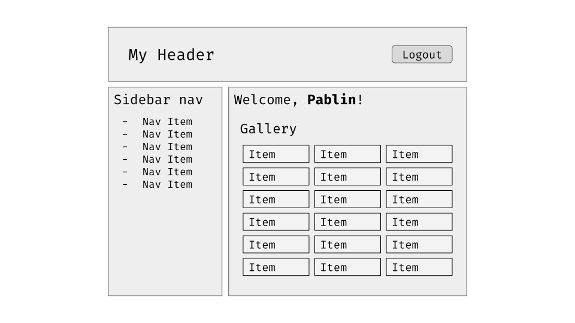

State Management with Redux in 2020
The past, the present and
an introduction to Redux Toolkit
Presented by
 Pablin
Pablin
What is a state?
A state represents a snapshot of a system, with the outcome of all the actions taken since the initial load.
What is a state?
Example: a checkboxInitial state
state: unchecked
Component state changes in React
It's not done automatically as in HTML. We need to handle those state changes.import React, { useState } from 'react'
const MyComponent = () => {
const [value, setValue] = useState()
const handleChange = event => setValue(event.target.value)
return (
<input
type="text"
onChange={handleChange}
value={value}
/>
)
}
Fancy custom hooks, maybe
import React, { useState } from 'react'
const useInput = initialValue => {
const [value, setValue] = useState(initialValue)
const onChange = event => setValue(event.target.value)
return {
onChange,
value,
}
}
const MyComponent = () => {
const bindInput = useInput()
return (
<input
type="text"
{...bindInput}
/>
)
}
Cool!
What if my state depends on another component?
Usual case: radio buttons, toggles, etcReact says: lift the state up!
Great!
What about complex cases?




But can we fix this
- We can wrap
 in
in React.memo()- Added boilerplate
- Prop drilling is not nice
- We can create a custom
Context
React Contexts
import React, { createContext, useContext, useState } from 'react'
const HiContext = createContext({})
const HiProvider = ({ children }) => {
const [name, setName] = useState('')
const values = { name, setName }
return (
<HiContext.Provider value={values}>
{children}
</HiContext.Provider>
)
}
const Greeter = () => {
const { name } = useContext(HiContext)
return (
Hi, {name}!
)
}
const App = () => {
return (
<HiProvider>
<Greeter />
</HiProvider>
)
}
Context has its caveats, too
- Access through hooks gets us tightly coupled components
- They require a complex testing strategy
- Components not easily reusable in other codebases
- The HOC pattern could probably help here
HOC Pattern
import React, { useContext } from 'react'
import { HiContext } from './hi-context'
const Greeter = ({ name }) => {
return (
Hi, {name}!
)
}
const GreeterContainer = () => {
const { name } = useContext(HiContext)
return <Greeter name={name} />
}
Convenient!
But what happens with really complex apps?
Introducing Redux
- It allows us to separate the state management logic from the components.
- It can be used from Vanilla JS to different UI libraries, including React.
Redux Architecture


Redux Architecture
Ultimately, a Redux store exposes
-
dispatch() -
getState()
How did we write Redux Stores so far?
// constants.js
export const SAY_HI = 'SAY_HI'
// actions.js
import { SAY_HI } from './constants'
export const sayHi = (name) => {
return {
type: SAY_HI,
payload: name,
}
}
// Usage
import { sayHi } from './actions'
store.dispatch(sayHi('Pablin'))
-
NAMED_CONSTANTS_YELLING_AT_US - Action creators
Reducers
import { SAY_HI } from './constants'
const reducer = (state, action) => {
switch (action.type) {
case SAY_HI: {
const name = action.payload
return {
...state,
sayHi: {
...state.sayHi,
name,
},
}
}
default:
return state
}
}
Selectors
They allow us to read info from the storeexport const getUserName = state => state.sayHi.name
// Usage
const userName = getUserName(store.getState())Connecting our store to React
Introducingreact-redux
- Exposes hooks that allow us to read from the Redux Store.
-
Exposes a
connectHOC that feeds the state into our components.
React-redux's connect
import { connect } from 'react-redux'
import { getUserName } from './selectors'
import { sayHi } from './actions'
import Greeter from './greeter'
const mapStateToProps = state => {
name: getUserName(state),
}
const mapDispatchToProps = {
sayHi,
}
export default connect(mapStateToProps, mapDispatchToProps)(Greeter)
Awesome!
Got Async?
Got Async?
Apps have an async nature, although a design principle of Redux is:state management should be thought as a synchronous operation
How do we deal with this?
Thunks
Thunk comes from the past participle of think.
It's a commonly used term to define external calculations from other frameworks that —by nature— take longer than expected.
Redux supports middlewares. They can intercept, abort and transform dispatches.
It's straightforward to thing of a plugin that adds support for async actions.
redux-thunk
It allows us to perform multiple dispatches within one action.
Let's take a look to this scenario
Translating API Calls into Actions
import API from '../lib/api'
export const GET_USERS_LOADING = 'GET_USERS_LOADING'
export const GET_USERS_SUCCESS = 'GET_USERS_SUCCESS'
export const GET_USERS_ERROR = 'GET_USERS_ERROR'
const getUsersLoading = () => ({
type: GET_USERS_LOADING
})
const getUsersSuccess = users => ({
type: GET_USERS_SUCCESS,
payload: users,
})
const getUsersError = error => ({
type: GET_USERS_ERROR,
payload: error,
})
export const getUsers = () => (dispatch, getState) => {
dispatch(getUsersLoading())
API.getUsers()
.then(response => {
dispatch(getUsersSuccess(response.users))
})
.catch(error => {
dispatch(getUsersError(error))
})
}
// Usage
store.dispatch(getUsers())
Reducer
import {
GET_USERS_LOADING,
GET_USERS_SUCCESS,
GET_USERS_ERROR,
} from './constants'
const reducer = (state, action) => {
switch (action.type) {
case GET_USERS_LOADING: {
return {
...state,
users: {
...state.users,
loading: true,
error: false,
},
}
}
case GET_USERS_SUCCESS: {
const allUsers = action.payload
return {
...state,
users: {
...state.users,
loading: false,
error: false,
allUsers,
},
}
}
case GET_USERS_ERROR: {
return {
...state,
users: {
...state.users,
loading: false,
error: true,
},
}
}
default:
return state
}
}
Introducing:
Redux Toolkit
We've all been there
- Lack of consensus on how to deal with async states.
- Adding small changes end up in huge PRs.
-
When starting from scratch:
- Boilerplate can be dangerous
- Implementing a new store is boring and slow
Why Redux Toolkit is nice
-
It bakes in
redux-thunk -
Includes support for Redux Dev Tools in
env !== PROD -
Uses
immer.jsto allow state mutations - It's convenient functions are sugar, and spice, and everything nice.
Goodies
createAction & createReducer
import {
createAction,
createReducer
} from '@reduxjs/toolkit'
const increment = createAction('increment')
const decrement = createAction('decrement')
const initialState = {
counter: 0,
}
const reducer = createReducer(initialState, {
[increment]: (state, payload) => {
state.counter += payload
},
[decrement]: (state, payload) => {
state.counter -= payload
},
})
// Usage
store.dispatch(increment(10))
Still feeling cluttered?
createSlice
import {
createSlice,
} from '@reduxjs/toolkit'
const reducer = createSlice({
name: 'mySlice',
initialState: {
counter: 0,
},
reducers: {
increment: (state, payload) => {
state.counter += payload
},
decrement: (state, payload) => {
state.counter -= payload
}
},
})
export const { increment, decrement } = reducer.actions
// Usage
store.dispatch(increment(10))
Now what about async thunks
createAsyncThunk
import {
createAsyncThunk,
createSlice,
} from '@reduxjs/toolkit'
const getUserData = createAsyncThunk('users/getUserData', async () => {
const apiResponse = await API.getUserData()
return apiResponse.data
})
const usersSlice = createSlice({
name: 'users',
initialState: {
current: {
loading: false,
error: false,
info: null,
},
},
extraReducers: {
[getUsers.pending]: state => {
state.current.loading = true
state.current.error = false
state.current.info = null
},
[getUsers.fulfilled]: (state, payload) => {
state.current.loading = false
state.current.info = payload
},
[getUsers.rejected]: state => {
state.current.loading = false
state.current.error = true
},
}
})
export default usersSlice
// Usage
store.dispatch(getUserData())
Putting it all together
import { combineReducers } from 'redux'
import { configureStore } from '@reduxjs/toolkit'
import userSlice from './user'
const rootReducer = combineReducers({
[userSlice.name]: userSlice.reducer,
{...otherReducersYouMightHave},
})
const initializeStore = () =>
configureStore({
reducer: rootReducer,
})
export default initializeStore
// Usage
import { Provider } from 'react-redux'
import initializeStore from './store'
const store = initializeStore()
const App = () => (
<Provider store={store}>
<Greeter />
</Provider>
)
Thunk arguments
import { configureStore, getDefaultMiddleware } from '@reduxjs/toolkit'
// rootReducer defined
const initializeStore = api =>
configureStore({
reducer: rootReducer,
middleware: [
...getDefaultMiddleware({
thunk: {
extraArgument: { API: api },
},
}),
],
})
export default initializeStore
// Usage
const getUsers = createAsyncThunk('users/get',
(params, { dispatch, getState, extra: { API } }) => {
return API.getUsers(params)
},
)
More goodies!
Demo Time, then!
üéâ
Getting started ü§ë
-
Install the following packages:
$ yarn add redux @reduxjs/toolkit react-redux reselect -
Create
src/store/index.jsand configure an empty store - Start creating your slices üç∞
Conclusions
-
Testing
- Think of the store as a black box
- Create an empty store for each test case
-
Dispatch actions
->test selectors
-
Thunks
- Test the happy path, dispatching the action
-
Test alternative cases by dispatching
action.fulfilledandaction.rejected - Async can and WILL fail at some point. Deal with it.
-
Some bonus best practices
-
Use
createStructuredSelectorformapStateToProps -
Use
extraArgumentforthunk, to avoid complex mocking in tests.
-
Use